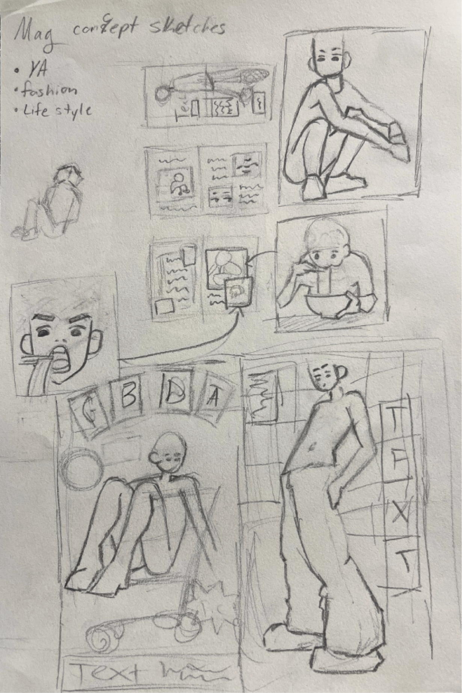

Princess Cafe has a strong local presence and community appeal through its connection to the Princess Cinema, but its branding feels inconsistent. The dark, nearly all-black exterior and low-contrast signage make it easy to overlook, a problem echoed in its muted website with a hard-to-read logo. While the cafe offers a warm, nostalgic, and community-focused experience, its visual identity lacks clarity and energy. Improving signage, logo visibility, and the website design would better reflect its vibrant personality and help attract new visitors.

Princess Cafe should be designed to be the natural extension of Princess Cinema. “Twin Princesses ” creating one seamless experience. By offering themed food and drinks inspired by the films currently showing, along with ticket-based deals and rotating promotions, the movie night begins before guests even take their seats. The cafe becomes the opening scene; turning a simple trip to the theater into a shared, immersive experience.
Media...